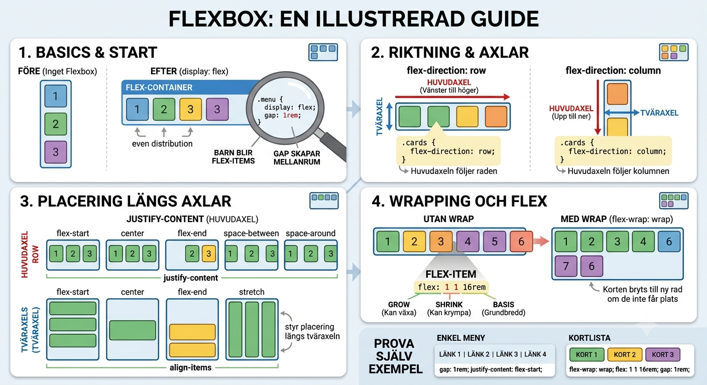

Modul 4
Kap 4.1 - Flexbox för rader, menyer och kort
Flexbox används när element ska placeras längs en huvudaxel: i rad eller kolumn.
Mål
- Förstå när flexbox passar.
- Kunna använda
display: flex,gapochflex-wrap. - Förstå huvudaxel och tväraxeln.
- Bygga en enkel meny eller kortlista.
När passar flexbox?
Flexbox är bra när en grupp element ska ligga efter varandra: länkar i en meny, knappar i en verktygsrad eller kort i en lista. Du tänker först på en riktning: rad eller kolumn.
An Interactive Guide to Flexbox visar flexbox med interaktiva exempel. Sidan förklarar hur display: flex, flex-direction, huvudaxel, tväraxel, justify-content, align-items, gap, flex-grow, flex-shrink och flex-wrap påverkar layouten.

Starta flexbox
.menu {
display: flex;
gap: 1rem;
}display: flex gör barnen till flex-items. gap skapar jämnt avstånd mellan dem utan extra marginaler på varje länk.
Riktning och axlar
.cards {
display: flex;
flex-direction: row;
align-items: stretch;
justify-content: space-between;
}Med flex-direction: row går huvudaxeln från vänster till höger. justify-content styr placering längs huvudaxeln. align-items styr placering längs tväraxeln.
Radbrytning med wrap
Om korten inte får plats kan de brytas till ny rad.
.cards {
display: flex;
flex-wrap: wrap;
gap: 1rem;
}
.card {
flex: 1 1 16rem;
}Regeln flex: 1 1 16rem betyder att kortet får växa, krympa och har en ungefärlig grundbredd på 16rem.
flex-grow och flex-basis
flex-grow styr om ett flex-item får växa och ta upp ledigt utrymme i containern. Värdet 0 betyder att itemet inte växer. Värdet 1 betyder att itemet får dela på ledigt utrymme med andra items som också får växa.
flex-basis är itemets startstorlek längs huvudaxeln innan det eventuellt växer eller krymper. I flex: 1 1 16rem betyder den sista delen, 16rem, att itemet börjar med ungefär den bredden i en radlayout.
Interaktivt exempel
Ändra värdena och se hur flex-items flyttas, växer, krymper och bryts till nya rader.
Huvudaxeln går horisontellt ↔. Tväraxeln går vertikalt ↕. justify-content styr från vänster till höger och align-items styr uppifrån och ned.
.container {
display: flex;
}Prova själv
- Skapa en meny med fyra länkar.
- Gör menyn till flex-container.
- Lägg till
gapoch testa olikajustify-content. - Skapa tre kort och låt dem brytas till ny rad med
flex-wrap.